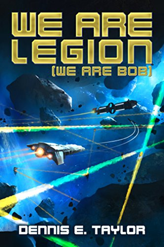

- Science Fiction
- We Are Legion (We Are Bob)
- Ender's Game

- Science Fantasy
- Nice Dragons Finish Last

- Fantasy
- Storm Front
- Hounded

This website is going to be where I post reviews of books, that I have read and what I thought of them. I will be breaking them into three categories based on genre. The three main genre I prefer are science fiction, science fantasy, and fantasy. However, most, if not all, of the books will fall under the umbrella genre of speculative fiction.
Science fiction is the genre in which the story has elements considered to be unlikely in real life but are portayed as reasonable in the story like practical space travel and colonization. Good examples of this are stories like Ready Player One or Star Gate where the key element is somthing that we think could or may even already exist but is taken to an extreme which in reality has not been achieved or is seen as unlikely.
Fantasy is a genre chracterized by a world of magic, monsters, and other things we know to be impossible. Good examples of this grenre are the Lord of the Rings series or the Harry Potter books.
Science fantasy is a hybrid of the two genres because it focuses on making the impossible seem almost possible. Good examples of this are Star Wars and Doctor Who.